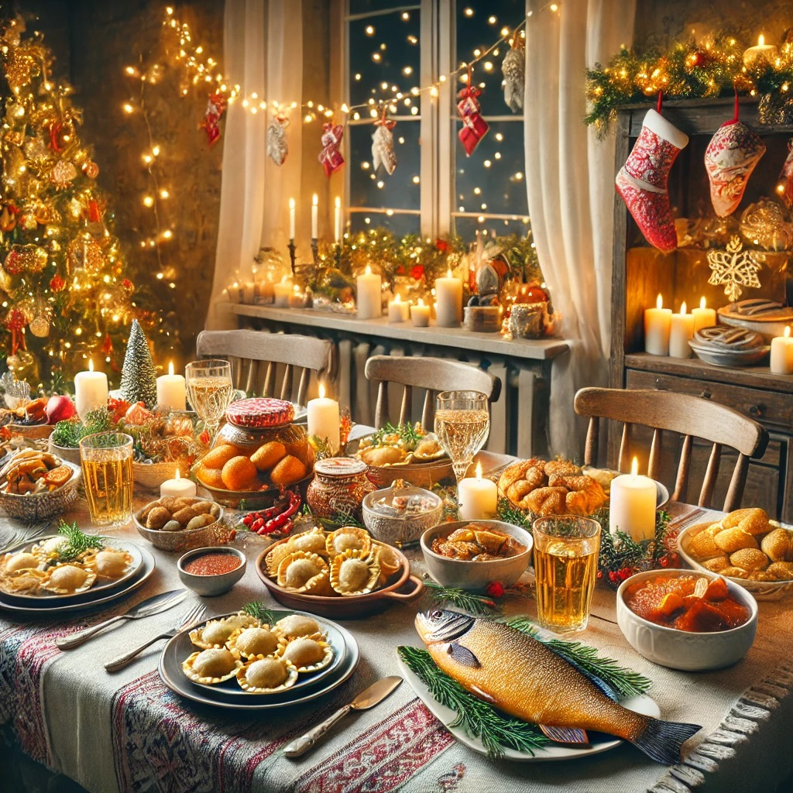

Tradycyjne Potrawy Świąteczne w Polsce
Świąteczne potrawy w Polsce mają swoje głębokie tradycje, których nie można pominąć podczas Wigilii i innych świąt. Do najważniejszych z nich należą:
- Barszcz czerwony z uszkami
- Śledź w różnych wariantach
- Uszka z grzybami
- Karp w galarecie
- Kompot z suszu
- Kutia
Każda z tych potraw ma swoje miejsce na wigilijnym stole, wprowadzając atmosferę ciepła i tradycji.
Tradycja gotowania potraw w Polsce:
Wiele rodzin przygotowuje specjalne dania tylko w okresie świąt, dbając o to, by były one tradycyjne, zdrowe i pełne smaku. Potrawy te są nie tylko pełne aromatów, ale także pełne symboliki, łącząc pokolenia przy jednym stole.
